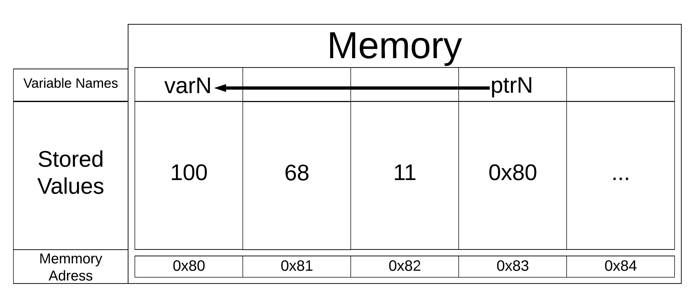

C++ requires users to specify the data type of each variable before it is used. The primary C++ built-in atomic data types are: integer (int), floating point (float), double precision floating point (double), Boolean (bool), and character (char). There is also a special type which holds a memory location called pointer. C++ also has collection or compound data types, which will be discussed in a future chapter.
Checkpoint1.9.1.
Q-1: After reading the above paragraph, what makes a data type categorized as an atomic data type? (hint: arrays and vectors are not atomic)
It must be mutable so that it can change at any time.
Incorrect, Atomic data types are not required to be mutable.
Its memory size cannot be too big, relating to how atoms are naturally very small.
Incorrect, The data type can be any size, but youre close. (hint: atomic data types got their name when scientists thought atoms were the smallest things in existence.)
It must be statically allocated so it cannot change in size.
Incorrect, atomic data types have nothing to do with being static or dynamic.
It cannot be broken down any smaller while still being easily operable.
Correct, the atomic data type actually got its name when scientists thought atoms were the smallest things in existence. That is why they are data types that cannot be broken down.
Subsection1.9.1Numeric Data
Numeric C++ data types include int for integer, float for floating point, double for double precision floating point.
The standard arithmetic operations, +, -, *, and / are used with optional parentheses to force the order of operations away from normal operator precedence.
When two integers are divided in C++, the integer portion of the quotient is returned and the fractional portion is removed. i.e. When two integers are divided, integer division is used. To get the whole quotient, declaring one of the numbers as a float will convert the entire result into floating point.
Exponentiation in C++ is done using pow() from the cmath library and the remainder (modulo) operator is done with %.
Run the following code to see that you understand each result.
When declaring numeric variables in C++, modifiers like short, long, and unsigned can optionally be used to help to ensure space is used as efficiently as possible.
Checkpoint1.9.3.
Q-4: what is the result of dividing 3/2 in C++?
1
Right!
1.5
No. Integer division is used. Try again.
2
No. Integer division is used. Try again.
A run-time error will occur.
No, C++ generally will try to do as you ask.
none of the above
One of the above is correct.
Checkpoint1.9.4.
Q-5: How do I raise 4 to 5th power in C++?
``4**5``
No, ``**`` is used in other languages, but not C++.
``5**4``
No, ``**`` is used in other languages, but not C++, and the operators are reversed.
``4^5``
No. The ``^`` is a valid operator in C++, but it does something else.
``pow(4, 5)``
You got it! Remember the cmath library will need to be included for pow() to work.
Subsection1.9.2Boolean Data
Boolean data types are named after George Boole who was an English mathematician, so the word Boolean should be capitalized. However, the Boolean data type, in C++ uses the keyword bool which is not capitalized. The possible state values for a C++ Boolean are lower case true and false.
C++ uses the standard Boolean operators, and is given by && , or is given by ||, and not is given by !. Note that the internally stored values representing true and false are actually 1 and 0 respectively. Hence, we see this in output as well.
Checkpoint1.9.5.
//outputs boolean results to the command line
#include <iostream>
using namespace std;
int main() {
cout << true << endl;
cout << false << endl;
cout << (true || false) << endl;
cout << (true && false) << endl;
return 0;
}
Boolean data objects are also used as results for comparison operators such as equality (==) and greater than (>). In addition, relational operators and logical operators can be combined together to form complex logical questions. Table1.9.6 shows the relational and logical operators with examples shown in the session that follows.
Table1.9.6.
Operation Name
Operator
Explanation
less than
<
Less than operator
greater than
>
Greater than operator
less than or equal
<=
Less than or equal to operator
greater than or equal
>=
Greater than or equal to operator
equal
==
Equality operator
not equal
!=
Not equal operator
logical and
&&
Both operands true for result to be true
logical or
||
One or the other operand is true for the result to be true
logical not
!
Negates the truth value, false becomes true, true becomes false
Checkpoint1.9.7.
//outputs the results from the relational and logical operators
#include <iostream>
using namespace std;
int main(){
cout << (5 == 10) << endl;
cout << (10 > 5) << endl;
cout << ((5 >= 1) && (5 <= 10)) << endl;
return 0;
}
When a C++ variable is declared space in memory is set aside to hold this type of value. A C++ variable can optionally be initialized in the declaration by using a combination of a declaration and an assignment statement.
Consider the following session:
//showcases how variables work in C++
#include <iostream>
using namespace std;
int main(){
int theSum = 4;
cout << theSum << endl;
theSum = theSum + 1;
cout << theSum << endl;
bool theBool = true;
cout << theBool << endl;
theBool = 4;
cout << theBool << endl;
return 0;
}
The declaration int theSum = 0; creates a variable called theSum and initializes it to hold the data value of 0. The right-hand side of each assignment statement is evaluated and the resulting data value is assigned to the variable named on the left-hand side. Here the type of the variable is integer.
In C++, the data type cannot change. This is a characteristic of C++s static typing. A variable can hold ever only one type of data. Pitfall: C++ will often simply try to do the assignment you requested without complaining. Note what happened in the code above in the final output.
Checkpoint1.9.8.
Q-11: Why did theBool output a value of 1 after being set to 4?
Setting theBool to anything other than true or false is ignored.
No. Try changing the code and setting theBool to 0.
Setting theBool to anything > 0 will be true and false otherwise.
No. Try changing the code and setting theBool to -4.
false == 0 and true = !false i.e. anything that is not zero and can be converted to a Boolean is not false, thus it must be true.
Correct!
None of the above.
Try again. One of the above is correct. You might try changing the code and rerunning.
Subsection1.9.3Character Data
In C++ single quotes are used for the character (char) data type, and double quotes are used for the string data type.
Consider the following code.
Checkpoint1.9.9.
//outputs the boolean results to show how strings and chars differ in C++
#include <iostream>
#include <string>
using namespace std;
int main(){
string strvar = "b";
char charvar = 'b';
cout << ('b' == charvar) << endl;
cout << ("b" == strvar) << endl;
//cout << ('a' == "a") << endl; // will error!
return 0;
}
Try the following question.
Checkpoint1.9.10.
Q-14: If I want to create a string in C++, what set of symbols may be used?
No, single quotes are only used for single characters.
" "
Good job reading!
or " " may be used
No. Only one set of symbols may be used.
It depends upon the implementation.
No. No matter what, the implementation is consistent.
none of the above
One of the above is indeed correct.
Subsection1.9.4Pointers
A C++ pointer is a variable that stores a memory address.
We know that variables in a computer program are used to label data with a descriptive identifier so that the data can be accessed and used by that computer program. How C++ variables are implemented is worthy of discussion.
In C++ the value of each variable is stored directly in memory without the need for either a reference or an object. This makes access faster, but it is one of the reasons we need to declare each variable because different types take differing amounts of space in memory!
The following code declares a variable called varN that has in it a value of 100:
// C++ variable declaration and assignment of an integer value
int varN = 100;
In C++ the results of running this code will look like the diagram below:
Figure1.9.11.Figure 4: C++ variable
When we want to output the value to the console, we use the variable name to do so.
But, we can also identify the memory location of the variable, which is sometimes very valuable. This address may change each time the program is run. In C++, this will always look odd because it will be the actual memory address written in a hexadecimal code which is a base 16 code like 0x7ffd93f25244.
In C++ we use the address-of operator, & to reference the address.
Variables are stored in memory locations which are dependent upon the run itself. If you repeatedly run the above code you may see the location change.
In C++, variables store values directly, making them faster to reference.
If in C++, we want to create a reference to a memory location in C++, we must use a special syntax called a pointer.
Checkpoint1.9.12.
//outputs both the value of varN and the location in memory of varN
#include <iostream>
using namespace std;
int main(){
int varN = 101;
cout << varN << endl;
cout << &varN << endl;
return 0;
}
Subsubsection1.9.4.1Pointer Syntax
When declaring a pointer in C++ that will point to the memory address of some data type, you will use the same rules of declaring variables and data types. The key difference is that there must be an asterisk (*) between the data type and the identifier.
variableType *identifier; // syntax to declare a C++ pointer
int *ptrx; // example of a C++ pointer to an integer
White space in C++ generally does not matter, so the following pointer declarations are identical:
However, the first declaration is preferable because it is clearer to the programmer that the variable is in fact a pointer because the asterisk is closer to the variable name.
Subsubsection1.9.4.2The address-of operator, &
Now that we know how to declare pointers, how do we give them the address of where the value is going to be stored? One way to do this is to have a pointer refer to another variable by using the address-of operator, which is denoted by the ampersand symbol, &. The address-of operator & does exactly what it indicates, namely it returns the address.
The syntax is shown below, where varN stores the value, and ptrN stores the address of where varN is located:
variableType varN; // a variable to hold the value
variableType *ptrN = &varN; // a variable pointing to the address of varN
Keep in mind that when declaring a C++ pointer, the pointer needs to reference the same type as the variable or constant to which it points.
Expanding on the example above where varN has the value of 100.
//variable declaration for a single integer value
int varN = 100;
int *ptrN;
ptrN = &varN;
The results of running this C++ code will look like the diagram below.

Figure1.9.13.Figure 5: View into memory with pointers
Subsubsection1.9.4.3Accessing Values from Pointers
So, once you have a C++ pointer, how do you access the values associated with that location? You use the asterisk before the pointer variable, which goes to that address, effectively dereferencing the pointer, meaning that it will find the location of the value stored where the pointer was pointing.
In other words, varN and *ptrN (note the asterisk in front!) reference the same value in the code above.
Lets extend the example above to output the value of a variable and its address in memory:
_dereferencing:
//prints a variable by pointer and value
#include <iostream>
using namespace std;
int main( ) {
int varN = 100;
int *ptrN = &varN; // ptrN points to varN address
cout << "varN value: " << varN << endl;
cout << "varN location: " << ptrN << endl;
cout << "dereference ptrN: " << *ptrN << "endl";
return 0;
}
Checkpoint1.9.14.
Q-18: If the lines (varN = 50;) and (cout << *ptrN << endl;) were inserted into line 7-8, what would it cout?
varPntr: 100
Not quite, the variable varN no longer equals 100 past line 7!
varPntr: 50
Right!
varPntr: 150
No, the values do not add together!
0x7ffeb9ce053c
We are dereferencing the pointer, so you would not get the address of varN. Try again!
none of the above
One of the above is indeed correct.
Compiling and running the above code will have the program output the value in varN, what is in ptrN (the memory address of varN), and what value is located at that memory location.
The second output sentence is the address of varN, which would most likely be different if you run the program on your machine.
WARNING: What happens if you forget the asterisk when assigning a value to a pointer and had the following instructions instead?
//showcases what happens when reading from unknown memory locations
#include <iostream>
using namespace std;
int main() {
int varN = 100;
int *ptrN = varN; // Note: no asterisk,
// ptrN now refers to memory position 100,
// whatever happens to be there!
// You might get an error or you might not!
cout << "varN value: " << varN << endl;
cout << "varN location: " << ptrN << endl;
cout << "ptrN points to varN: " << endl;
cout << "dereference ptrN: " << *ptrN << "\n\n";
return 0;
}
This is BAD, BAD, BAD!
Figure1.9.15.Figure 6: dangling pointer reference
If your compiler does not catch that error (the one for this class may), the first cout instruction outputs:
After changing *ptrN, varN now has: 50
which is expected because you changed where ptrN is pointing to and NOT the contents of where it is pointing.
The second cout instruction is a disaster because
You dont know what is stored in location 100 in memory, and
(2) that location is outside of your segment (area in memory reserved for your program), so the operating system will jump in with a message about a segmentation fault. Although such an error message looks bad, a seg fault is in fact, a helpful error because unlike the elusive logical errors, the reason is fairly localized.
Subsubsection1.9.4.4The NULL pointer
The NULL pointer in C++ points to nothing and is often denoted by the keyword NULL (all caps) or by 0. The NULL pointer is often used in conditions and/or in logical operations.
The following example demonstrates how the NULL pointer works. The variable ptrx initially has the address of x when it is declared. On the first iteration of the loop, it is assigned the value of NULL (i.e. 0) thereby ending the loop:
//showcases how you can use NULL.
#include <iostream>
using namespace std;
int main( ) {
int x = 12345;
int *ptrx = &x;
while (ptrx) {
cout << "Pointer ptrx points to " << ptrx << endl;
ptrx = NULL;
}
cout << "Pointer ptrx points to nothing!" <<endl;
}
Helpful Tip: The NULL pointer becomes very useful when you must test the state of a pointer, such as whether the assignment to an address is valid or not.
Checkpoint1.9.16.
Q-21: If I want to use the char type in C++, what set of symbols must be used?
Right!
" "
No. Double quotes are only used for strings.
or " " may be used
No. Only one set of symbols may be used.
It depends upon the implementation.
No. The implementation is consistent.
none of the above
One of the above is indeed correct.
Checkpoint1.9.17.
Q-22: A/an ___ is used to store a memory address in C++?
Checkpoint1.9.18.
Q-23: How may one reference a variables memory address in C++?
using ``&``
Right! ``&`` is the "address-of" operator, used to reference an address.
using ``*``
No. ``int *p;`` defines a pointer to an integer, and ``*p`` would dereference that pointer, i.e. retrieve the data that p points to.
using ``id``
No. This is used in other languages such as Python.